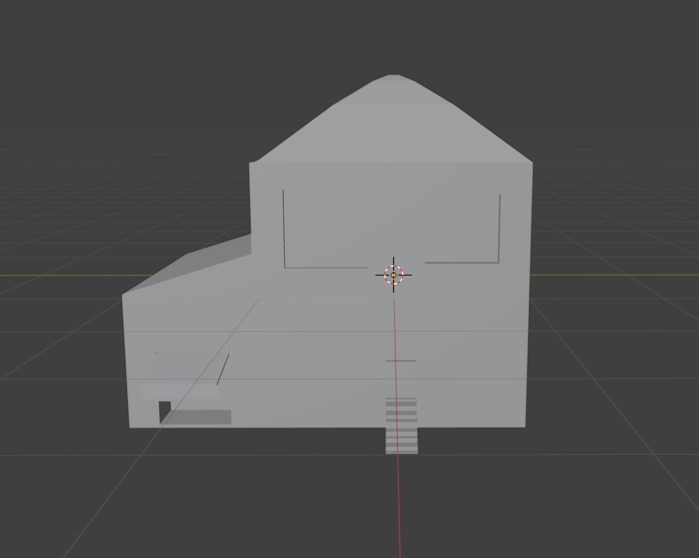
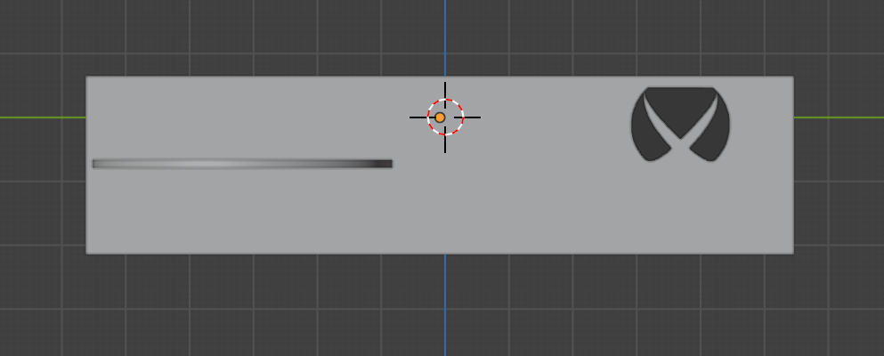
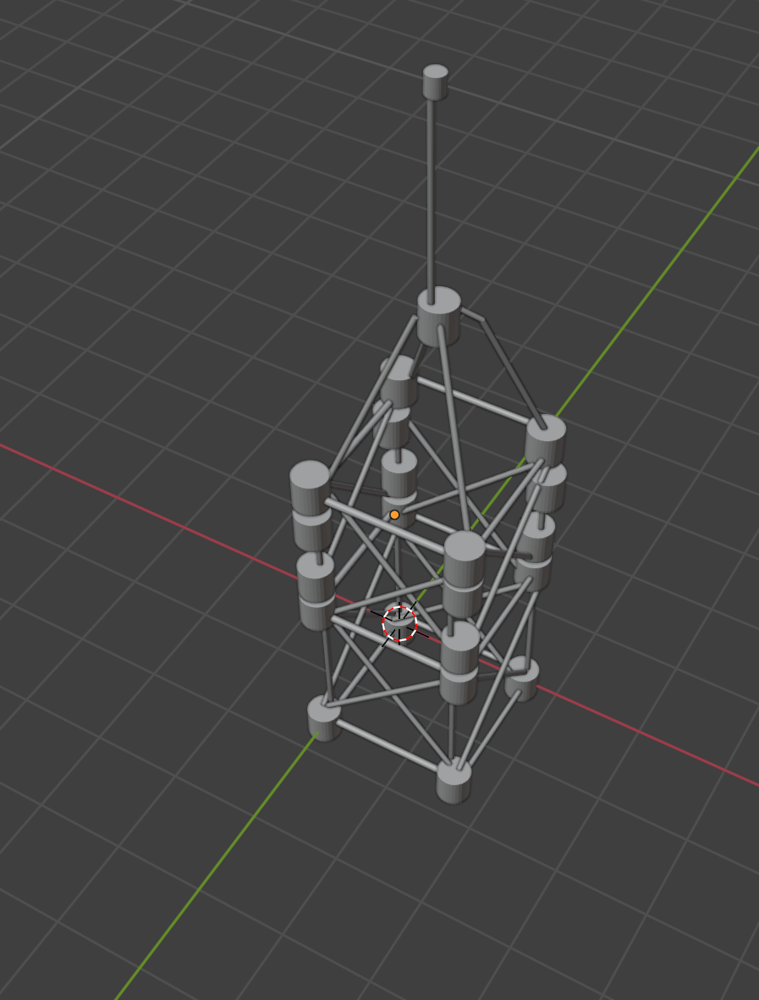
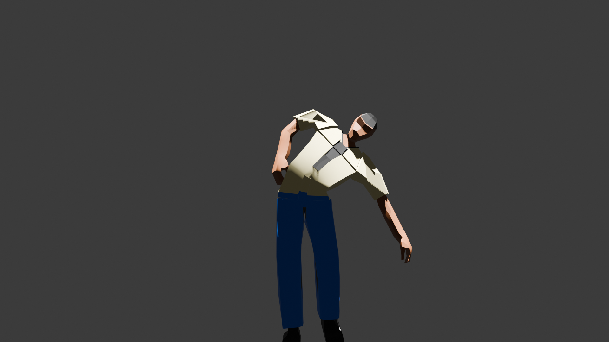

3D House
In my free time, I challenged myself to apply newly acquired skills by creating a 3D model of a house. The design focused primarily on the exterior and involved basic techniques such as extrusion and scaling, resulting in a clean, simple structure.
The Xbox Model
Here is my attempt at creating an Xbox model. Inspired by a PlayStation model created nearby, I wanted to complement it with my own Xbox design. The project was completed quickly using extrusion and intrusion techniques.
My Keychain Model
During our first learning week, we were assigned to create a keychain in Blender. This was our first project using the software, which helped us become familiar with the basic controls and tools. I designed my keychain to display "Sp5der" as a tribute to the popular Sp5der Worldwide hoodies, which I admire..

Low Poly Person
One of the more challenging and rewarding projects was creating a low-poly human in Blender. Unlike earlier tasks that followed step-by-step instructions, this assignment required a more independent approach. We had to rely on our understanding of basic shapes, proportions, and modeling techniques to build the figure from scratch.

3D Cat
The cat model was a more complex project that required creative problem-solving. Unlike earlier tasks, it didn’t follow step-by-step instructions, so I had to figure out the shape on my own using basic modeling tools. This helped me improve my understanding of form, proportion, and Blender’s sculpting techniques.

Water Tank
The water tank was a relatively simple project that focused on using basic shapes and modifiers. Starting with a cylinder, I added loop cuts and adjusted the form to create the structure. This exercise helped reinforce foundational modeling skills and efficient object manipulation in Blender.

Spaghetti tower
This model was inspired by the spaghetti and marshmallow tower that our group created during a DDI activity. To replicate the structure in Blender, I primarily used cylinders and focused on accurately representing the intersecting supports. The project gave me valuable practice with extruding and rotating objects, especially for aligning the cross sections of the tower.ere is my attempt at creating an Xbox model. Inspired by a PlayStation model created nearby, I wanted to complement it with my own Xbox design. The project was completed quickly using extrusion and intrusion techniques.
Game Character
I created a custom game character for use in a 3D environment. The most challenging part was modeling the head, but after some trial and error, I achieved a result that worked well with the body. This project also introduced me to coloring and rigging, which were easier than expected and helped expand my skills in areas I hadn’t explored before.
Unreal Engine 5 Game
I designed a maze as part of the game I’m developing in Unreal Engine 5. The process involved trial and error, especially early on when I struggled to find a way to delete extruded blocks. After restarting several times, I finalized a design that I’m proud of. Overall, it was a valuable learning experience, and I believe the finished maze offers a fun and challenging gameplay element.

Game Play of Maze & What it is.
Bryce’s Maze Runner is a timed maze escape game where players must find a hidden key and reach the exit within 40 seconds. I created the game in Unreal Engine 5 over a two-week period while learning the software. The main challenge lies in locating the key and navigating the maze efficiently. I used Blueprints for the key-door system and UI elements like the timer. The most difficult part was designing a map that felt balanced—neither too easy nor too hard. After testing, I refined the UI and timing to improve gameplay. Given more time, I’d add obstacles and increase the maze’s complexity.